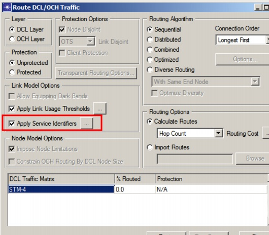

Routing > Service Identifiers > Routing Traffic with Service Identifiers
Routing Traffic with Service Identifiers
After you have assigned Client Service Identifiers to DCL connections and Server Service Identifiers to wavelengths (OCH connections), you can use these identifiers to drive the Routing design action. In doing so, you can prohibit DCL connections from being routed over certain wavelengths, if the Client Service Identifiers of the DCL connections do not match the Server Service Identifiers of the wavelengths. That is, you can force certain services to be routed over certain wavelengths that are reserved for those services only. Use Procedure 6-10 to apply service identifiers.
Procedure 6-10 Applying Service Identifiers to Traffic
- Open the Routing design action by selecting Design > Route DCL/OCH Traffic.
The Route DCL/OCH Traffic dialog box appears. For more information about this dialog box, refer to Route DCL/OCH Traffic Dialog Box.
Figure 6-19 Route DCL/OCH Traffic Dialog Box

- Check the "Apply Service Identifiers" option.
- Click the "..." button to access specific options for applying service identifiers.
The Service Identifier Requirements Dialog Box opens.
Figure 6-20 Service Identifier Requirements Dialog Box
- Select one of the following options:
- All client identifiers must be matched—A DCL connection can only be routed over a wavelength if the Client Service Identifiers of the DCL connection contain at least all the Server Service Identifiers of the wavelength. The Client Server Identifiers may contain more entries than the Server Service Identifiers, but not fewer.
- At least one client identifier must be matched—A DCL connection can only be routed over a wavelength if the Client Service Identifiers of the DCL connection contains at least one the Server Service Identifiers of the wavelength. If the wavelength has only one Server Service Identifier, the DCL connection should at least contain the same identifier among its Client Service Identifier. If the wavelength has multiple Server Service Identifiers, the DCL connection should at least contain one of the same identifiers among its Client Service Identifiers.
- Click OK to apply your selection and close the dialog box.
- Click the Route button to run the design action or Close to exit the dialog box without running the design action.
End of Procedure 6-10
| Home © 1987-2007 OPNET Technologies, Inc. All Rights Reserved. This software may be covered by one or more U.S. Patents. See complete patent notice in the Legal Notices section. OPNET Support Center |